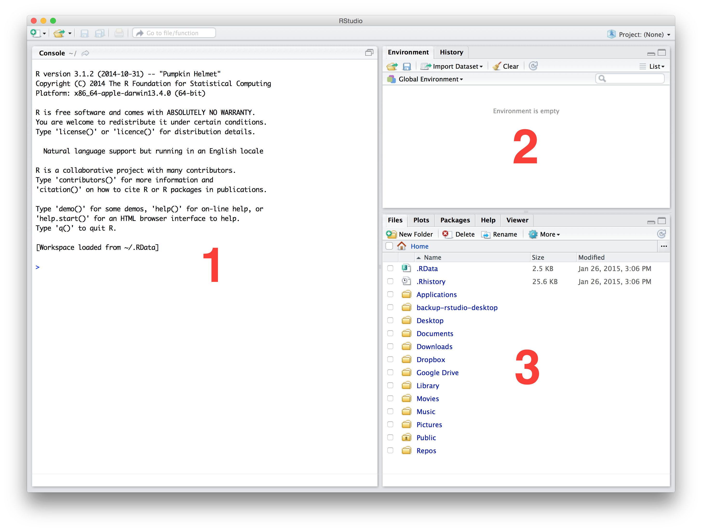

Get up and running with R and RStudio
What is R?
The answer to this question very much depends on who we ask. The geeky answer is something like this…
R is a dialect of the S language, which was developed by John Chambers and colleagues at Bell Laboratories in the mid 1970s. It was designed to offer an interactive computing environment for statisticians and scientists to carry out data analysis. There are essentially two widely used versions of S (though others have started to appear), a commercial one called S-Plus, and the open source implementation known as R. S-Plus came first, and although it is still around, it is used less each year. Development of R was begun in the late 1990s by two academics, Ross Ihaka and Robert Gentleman, at the University of Auckland. Their motivation was to create an open source language to enable researchers in computational statistics to explore new ideas. That language quickly evolved into something that looked more and more S-like, which we now know as R (GNU R, to be overly precise).
We could go on and on about the various features that R possesses. R is a functional programming language, it supports object orientation, etc etc… but these kinds of explanations are only helpful to someone who already knows about computer languages. It is useful to understand why so many people have turned to R to meet their data analysis needs. When a typical R user talks about “R” they are often referring to two things at once, the GNU R language and the ecosystem that exists around the language:
R is all about data analysis. We can carry out any standard statistical analysis in R, as well as access a huge array of more sophisticated tools with impressive names like “structural equation model”, “random forests” and “penalized regression”. These days, when statisticians and computer scientists develop a new analysis tool, they often implement it in R first. This means a competent R user can always access the latest, cutting edge analysis tools. R also has the best graphics and plotting facilities of any platform. With sufficient expertise, we can make pretty much any type of figure we need (e.g. scatter plots, phylogenetic trees, spatial maps, or even volcanoes). In short, R is a very productive environment for doing data analysis.
Because R is such a good environment for data analysis, a very large community of users has grown up around it. The size of this community has increased steadily since R was created, but this growth has really increased up in the last 5-10 years or so. In the early 2000s there were very few books about R and the main way to access help online was through the widely-feared R mailing lists. Now, there are probably hundreds of books about different aspects of R, online tutorials written by enthusiasts, and many websites that exist solely to help people learn R. The resulting ecosystem is vast, and though it can be difficult to navigate at times, when we run into an R-related problem the chances are that the answer is already written down somewhere1.
{kind=link}
R is not just about data analysis—though we will mostly use it this way. It is a fully-fledged programming language, meaning that once you become moderately proficient with it you can do things such as construct numerical simulation models, solve equations, query websites, send emails, access the foaas web service, and carry out many other tasks we don’t have time to write down. We won’t do any of this year or next but it is worth noting that R can do much more than just analyse data if we need it to.
Getting and installing R
R is open source, meaning anyone can download the source code – the collection of computer instructions that define R – and assuming they have enough time, energy and expertise, they are free to alter it as they please. Open source does not necessarily mean free, as in it costs £0 to download and use, but luckily R is free in this sense. If you are working on the University managed desktops it should already have been installed and is ready for you to use. We encourage you to install a copy on your own laptop so that you can work at home, in the library, at a café, or wherever else you find you are productive. Do not use R on its own though. Use it in combination with the RStudio IDE discussed in the next section.
In order to install R you need to download the appropriate installer from the Comprehensive R Archive Network (CRAN). We are going to use the “base distribution” as this contains everything you need to use R under normal circumstances. There is a single installer for Windows. On a Mac, it’s important to match the installer to the version of OS X. In either case, R uses a the standard install mechanism that should be familiar to anyone who has installed an application on their machine. There is no need to change the default settings—doing so will probably lead to problems later on.
Go ahead and install R on your own computer now. You won’t be able to make much use of this book without it.
After installing R it should be visible in the Programs menu on a Windows computer or in the Applications folder on a Mac. However, it would be a good idea to read the next section before launching R…
What is RStudio (and why use it)?
R and RStudio are not the same thing. We can run R without RStudio if we need to, but we cannot run RStudio without R. Remember that! R is essentially just a computer program that sits there and waits for instructions in the form of text. Those instructions can be typed in by a user like you or me, or they can be sent to it from another program. This means you can run R in a variety of different environments. The job of RStudio is to provide an environment that makes R a more pleasant and productive tool. One way to get a sense of why RStudio is a Very Good Thing is to look at what running R without it is like. The simplest way to run it on a Linux or Unix-based machine (like a Mac) is to use something called the Terminal. It’s well beyond the scope of this book to get into what this is, but in a nutshell, the Terminal provides a low-level, text-based way to interact with a computer. Here is what R looks like running inside a Terminal on a Mac:

We can run R in much the same way on Windows using the “Command Prompt” if we need to. The key thing you need to take away from that screenshot is that running R like this is very “bare bones”. We typed the letter “R” in the Terminal and hit Enter to start R. It printed a little information as it started up and then presented us with “the prompt” (>), waiting for input. This is where we type or paste in instructions telling R what to do. There is no other way to interact with it when we run R like this – no menus or buttons, just a lonely prompt.
The developers of R on Windows PCs and Macs provide a slightly nicer way to work with R. When we download and install R for either of these two operating systems, in addition to the basic R program that we just saw running in a Terminal, we also get another program that acts as a Graphical User Interface (GUI) for R. This is the thing labelled “R” in the Programs menu on a Windows computer or the Applications folder on a Mac. If you launch the R GUI on your computer you will be presented with roughly the same thing on either a Windows PC or a Mac. There will be something called the Console, which is where you interact directly with R by typing things at the prompt (which looks like this: >), and a few buttons and menus for managing common tasks. We will not go through these two GUIs in any more detail because we are not going to use them. We just need to know they exist so we don’t confuse them with RStudio.
So what is RStudio? The first thing to note is that it is a different program from R. Remember that! RStudio is installed installed separately from R and occupies its own place in the Programs menu (Windows PC) or Applications folder (Mac). In one sense RStudio is just another Graphical User Interface for R which improves on the “bare bones” experience. However, it is a GUI on steroids. It is more accurate to describe it as an Integrated Development Environment (IDE). There is no all-encompassing definition of an IDE, but they all exist to make programmer’s lives easier by integrating various useful tools into a single piece of software. From the perspective of this book, there are four key features that we care about:
The R interpreter—the thing that was running in the Terminal above—runs inside RStudio. It’s accessed via a window labelled Console. This is where we type in instructions we want to execute when we are working directly with R. The Console also shows us any output that R prints in response to these instructions. So if we just want the “bare bones” experience, we can still have it.
RStudio provides facilities for working with R programs using something called a Source Code Editor. An R program ( also called a “script”)" is just is a collection of instructions in the R language that have been saved to a text file. Nothing more! However, it is much easier to work with a script using a proper Source Code Editor than an ordinary text editor like Notepad.
An good IDE like RStudio also gives you a visual, point-and-click means of accessing various language-specific features. This is a bit difficult to explain until we have have actually used some of these, but trust us, being able to do things like manage packages, set working directories, or inspect objects we’ve made simplifies day-to-day use of R. This especially true for new users.
RStudio is cross-platform—it will run on a Windows PC, a Linux PC or a Mac. In terms of the appearance and the functionality it provides, RStudio is exactly the same on each of these platforms. If we learn to work with R via RStudio on a Windows PC, it’s no problem migrating to a Mac or Linux PC later on if we need to. This is a big advantage for those of us who work on multiple platforms.
We’re only going to scratch the surface of what RStudio can do and there are certainly alternative bits of software that could meet our immediate needs. The reason for introducing a powerful tool like RStudio is because one day you may need to access things like debugging facilities, package building tools, repository management. RStudio makes it easy to use these advanced tools.
Getting and installing RStudio
RStudio is developed and maintained by a for-profit company called… RStudio. They make their money by selling software tools and services related to R and RStudio. The basic desktop version of RStudio is free to download and use though. It can be downloaded from the RStudio download page. The one to go for is the Open Source Edition of RStudio Desktop, not the commercial version of RStudio Desktop. RStudio installs like any other piece of software, so there’s nothing to configure after installation.
If you haven’t already done it, go ahead and install RStudio Desktop on your own computer. You are going to need it.
The anatomy of RStudio
Once it’s installed RStudio is run like any other stand-alone application, via the Programs menu or the Applications folder on a Windows PC or Mac, respectively2. We’ll say this one last time—RStudio only works if we’ve also installed R. Here is how RStudio appears the first time it runs:

There are three panes inside a single window, which we have labelled with red numbers. Each of these has a well-defined purpose. Let’s take a quick look at these:
The large window on the left is the Console. We have already told you what this is for—the Console lets you know what R is doing and provides a mechanism to interact with R by typing instructions. All this happens at the prompt,
>. We will be working in the Console in a moment so won’t say any more about this here.The window at the top right contains two tabs. The first of these, labelled Environment, allows us to see all the different R objects we can access. There are also some buttons that help us to get data into and out of R. The second, labelled History, allows us to see a list of instructions we’ve previously sent to R. The buttons in this tab allow us to reuse or save these instructions.
The window at the bottom right contains five tabs. The first, labelled Files, gives us a way to interact with the files and folders. The next tab, labelled Plots, is where any figures we produce are displayed. This tab also allows you to save your figures to file. The Packages tab is where we view, install and update packages used to extend the functionality of R. The Help tab is where you can access and display various different help pages. The Viewer is essentially an embedded web browser for working with interactive output—we won’t be using it in this course.
Don’t be alarmed if RStudio looks different on your computer. There are a couple of reasons why this might be the case. First, the appearance of RStudio is highly customisable. Take a quick look at the Tools > Global Options... window to see what we mean. Second, there is a fourth window that is sometimes be visible when we work with RStudio—the source code Editor we mentioned above. RStudio saves its state between different sessions, so if we have already messed about with RStudio’s appearance or left a script open last time we used it you will see these changes.
Keep in mind that RStudio is very actively developed, which means features tend to appear or change over time. Consequently, if you update it regularly expect the odd thing to change here and there. This is generally a good thing—it usually means new features have been added—but it does require you to occasionally adjust to new additions.
Working at the Console
R was designed to be used interactively—it is what is known as an interpreted language, which we can interact with via something called a Command Line Interface (CLI). This is just a fancy way of saying that we can type an instructions to “do something” directly into the Console and those instructions will then be interpreted when we hit the Enter key. If our R expression does not contain any errors, R will then do something like read in some data, perform a calculation, make a figure, and so on. What actually happens obviously depends on what we ask it to do.
Let’s briefly see what all this means by doing something very simple with R. Type 1 + 3 at the Console and hit the Enter key:
1+3## [1] 4The first line above just reminds us what we typed into the Console. The line after that beginning with ## shows us what R printed to the Console after reading and evaluating our instructions.
What just happened? We can ignore the [1] bit for now (the meaning of this will become clear later in the course). What are we left with – the number 2. The instruction we gave R was in effect “evaluate the expression 1 + 3”. R read this in, decided it was a valid R expression, evaluated the expression, and then printed the result to the Console for us. Unsurprisingly, the expression 1 + 3 is a request to add the numbers 1 and 3, and so R prints the number 4 to the Console.
OK, that was not very exciting. In the next chapter we will start learning to use R to carry out more useful calculations. The important take-away from this is that this sequence of events—reading instructions, evaluating those instructions and printing their output—happens every time we type or paste something into the Console and hit Enter. The printing bit is optional by the way. Whether or not it happens depends on whether you decide to capture the output or not. Just remember, if R does not print anything to the Console it does not necessarily mean nothing has happened.
Why do we keep using that word expression? It has a very specific meaning in computer science. The Wikipedia page says:
An expression in a programming language is a combination of explicit values, constants, variables, operators, and functions that are interpreted according to the particular rules of precedence and of association for a particular programming language, which computes and then produces another value.
That probably doesn’t make much sense, but it at least demonstrates why we don’t let computer scientists teach biologists about programming. In simple terms, an R expression is a small set of instructions written in human readable(ish) text that tell R to do something. That’s it. We could write “instructions” instead of “expressions” throughout this book but we may as well use the correct word. Whatever we call them, our aim is to learn how to combine sequences of expressions to Get Things Done in R. That’s what this book is about.